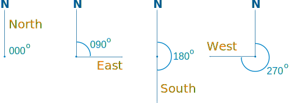

Compass: North, South, East and West

Directions on the "Compass Rose"
Compass Bearings
A Compass Bearing tells us Direction
The 4 main directions are North, South, East and West (going clockwise they are NESW).
How to remember?
With North pointing ahead, "West" and "East" make the word "WE"
| N | ||
| W | E | |
| S | ||
Or clockwise they are: "Never Eat Shredded Wheat"
 |
Play The GameTry the Direction Game. |
In Between
Halfway between North and East is North-East (NE).
There is also South-East (SE), South-West (SW) and North-West (NW).
And in between all of those are:
- NNE (North-North-East),
- ENE (East-North-East),
- ESE (East-South-East),
- SSE (South-South-East),
- SSW (South-South-West),
- WSW (West-South-West),
- WNW (West-North-West),
- NNW (North-North-west)
Example: in the morning there was a strong North wind, but later it swung around to the North-East
Example: they were sailing mainly South-West, but sometimes a little towards South-South-West.

Three-Figure Bearings
Three-figure bearings are an alternative to compass bearings that are much more precise. They are measured in a special way:
- Start measuring from the direction North
- Measure clockwise
- Give the bearing using three figures (or more than three if there's a decimal)
It is common to put extra "0"s to make a full 3 digits, so:
| North is 000° | ||
| West is 270° | East is 090° | |
| South is 180° | ||
Airline pilots and ships' helmsmen use three-figure bearings so that they can point their craft in exactly the right direction to safely reach their destination.
Examples
The four main compass bearings (North, East, South and West) are multiples of 90°:

The advantage of three-figure bearings is that they describe any direction uniquely:

Note that the last one has four figures (three in front of the decimal point and one after) but it is still a "three-figure bearing", the .4 just gives more accuracy.
The degree symbol is not always used:
Example: South-West is 225 (in other words 225° clockwise from North)